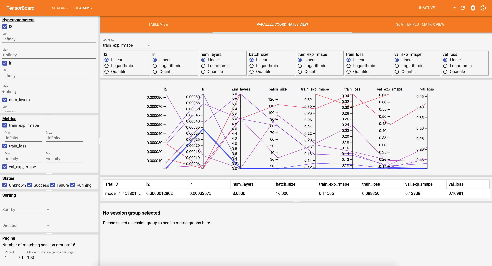

Getting Started¶
Executing a Model Selection Workload¶
Cerebro allows you to perform model selection of your deep neural network directly on an existing Spark DataFrame, leveraging Spark’s ability to scale across multiple workers:
from cerebro.backend import SparkBackend
from cerebro.keras import SparkEstimator
# datas storage for intermediate data and model artifacts
from cerebro.storage import LocalStore, HDFSStore
# Model selection/AutoML methods
from cerebro.tune import GridSearch, RandomSearch, HyperOpt
# Utility functions for specifying the search space
from cerebro.tune import hp_choice, hp_uniform, hp_quniform, hp_loguniform, hp_qloguniform
import tensorflow as tf
from pyspark.sql import SparkSession
spark = SparkSession \
.builder \
.appName("Cerebro Example") \
.getOrCreate()
...
backend = SparkBackend(spark_context=spark.sparkContext, num_workers=3)
store = LocalStore(prefix_path='/user/username/experiments')
# Define estimator generating function.
# Input: Dictionary containing parameter values
# Output: SparkEstimator
def estimator_gen_fn(params):
model = tf.keras.models.Sequential()
model.add(tf.keras.layers.Dense(100, input_dim=692))
model.add(tf.keras.layers.Dense(1, input_dim=100))
model.add(tf.keras.layers.Activation('sigmoid'))
optimizer = tf.keras.optimizers.Adam(lr=params['lr'])
loss = 'binary_crossentropy'
estimator = SparkEstimator(
model=model,
optimizer=optimizer,
loss=loss,
metrics=['acc'],
batch_size=params['batch_size'])
return estimator
# Define dictionary containing the parameter search space
search_space = {
'lr': hp_choice([0.01, 0.001, 0.0001]),
'batch_size': hp_quniform(16, 256, 16)
}
# Instantiate model selection object
model_selection = HyperOpt(backend=backend, store=store, estimator_gen_fn=estimator_gen_fn, search_space=search_space,
num_models=30, num_epochs=10, validation=0.25, evaluation_metric='loss',
feature_columns=['features'], label_columns=['label'], logdir='/tmp/logs')
# Perform model selection. Returns best model
model = model_selection.fit(train_df)
# Inspect best model training history
model_history = model.get_history()
# Perform inference using the best model and Spark DataFrame
output_df = model.set_output_columns(['label_predicted']).transform(test_df)
output_df.select('label', 'label_predicted').show(n=10)
# Access all models
all_models = model.get_all_models()
all_model_training_history = model.get_all_model_history()
# Convert the best model to Keras and perform inference using numpy data.
keras_model = model.keras()
pred = keras_model.predict([np.ones([1, 692], dtype=np.float32)])
# Save the keras checkpoint file.
keras_model.save(ckpt_path)
# Convert all the model to Keras
all_models_keras = [m.keras() for m in all_models]
Cerebro hides the complexity of gluing Spark DataFrames to a deep learning training script, reading data into a format interpretable by the training framework, and distributing the model selection using model hopper parallelism. The user only needs to provide a Keras model generating function, define a search space, and pick an AutoML method.
After model selection completes, Cerebro returns a model output which contains the best model. This model can be used like any Spark ML transformer to make predictions on an input DataFrame, writing them as new columns in the output DataFrame. It also contain all the other models and their training metrics history. All models can also be converted to Keras format and used in other ways.
The user provided Store object is used to store all model checkpoints, all intermediate representations of the training data, and training metrics (for Tensorboard). Cerebro currently supports stores for HDFS and local filesystems.
Visualizing the Model Selection Process¶
Cerebro logs model training metrics into the <prefix_path>/logs directory of your Storage object.
To visualize the model selection process, launch a Tensorboard instance as follows:
tensorboard --logdir <prefix_path>/logs

Training on Existing Parquet Datasets¶
If your data is already in the Parquet format and you wish to perform model selection using Cerebro, you
can do so without needing to reprocess the data in Spark. Using .fit_on_parquet(), you can train directly
on an existing Parquet dataset:
backend = SparkBackend(spark_context=spark.sparkContext, num_workers=3)
store = LocalStore(prefix_path='/user/username/experiments', train_path='/user/username/training_dataset', val_path='/user/username/val_dataset')
...
# Instantiate model selection object
model_selection = HyperOpt(backend=backend, store=store, estimator_gen_fn=estimator_gen_fn, search_space=search_space,
num_models=30, num_epochs=10, evaluation_metric='loss', logdir='/tmp/logs')
# Perform model selection
model_selection_output = model_selection.fit_on_prepared_data()
The resulting model_selection_output can then be used the same way as any Spark Transformer, or you can extract
the underlying Keras model and use it outside of Spark.
This approach will work on datasets created using backend.prepare_data. It will also work with
any Parquet file that contains no Spark user-defined data types (like DenseVector or SparseVector). It’s
recommended to use prepare_data to ensure the data is properly prepared for training even if you have an existing
dataset in Parquet format. Using prepare_data allows you to properly partition the dataset for the number of
training processes you intend to use, as well as compress large sparse data columns:
backend = SparkBackend(spark_context=spark.sparkContext)
store = HDFSStore(train_path='/user/username/training_dataset', val_path='/user/username/val_dataset')
backend.prepare_data(store, train_df, validation=0.25, feature_column='features', label_column='label')
Once the data has been prepared, you can reuse it in future Spark applications without needing to call
backend.prepare_data again.
End-to-End Example¶
rossmann_model_selection.py script provides an example of end-to-end data preparation and model selection of a model for the Rossmann Store Sales Kaggle competition. It is inspired by an article An Introduction to Deep Learning for Tabular Data and leverages the code of the notebook referenced in the article. The example is split into three parts:
The first part performs complicated data preprocessing over an initial set of CSV files provided by the competition and gathered by the community.
The second part defines a Keras model and performs model selection using Cerebro on Spark.
The third part performs prediction using the best model and creates a submission file.
To run the example:
$ wget https://raw.githubusercontent.com/horovod/horovod/master/examples/keras_spark_rossmann_estimator.py
$ wget http://files.fast.ai/part2/lesson14/rossmann.tgz
$ tar zxvf rossmann.tgz
$ python3 rossmann_model_selection.py